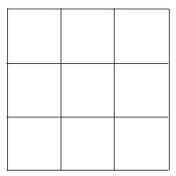
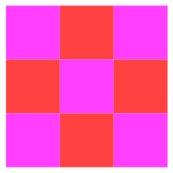
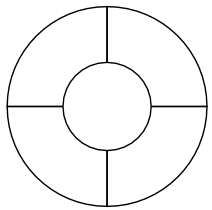
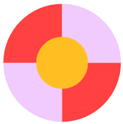
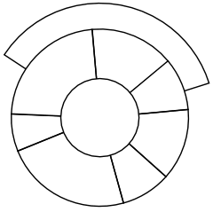
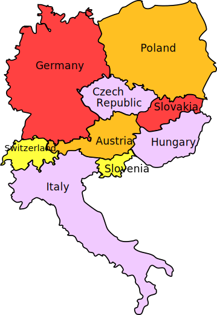
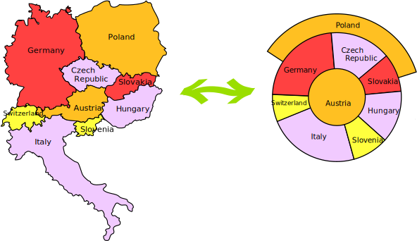
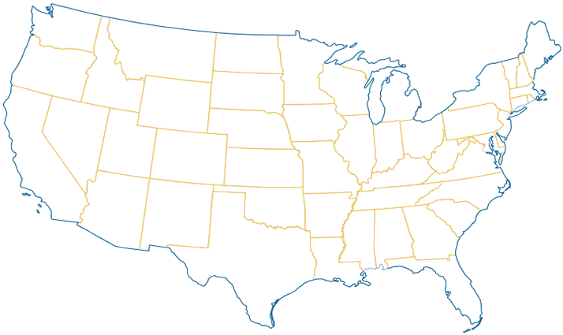

Coloring (The Four Color Theorem)
This activity is about coloring, but don't think it's just kid's stuff. This investigation will lead to one of the most famous theorems of mathematics and some very interesting results.
Have you ever colored in a pattern and wondered how many colors you need to use?
There is only one rule
Two sections that share a common edge cannot be colored the same!
Having a common corner is OK, just not an edge.
Let's start with a simple pattern like a group of nine squares:

How many colors do you need to color the pattern of nine squares?
You could use nine different colors, but could make do with as few as two:

A Little More Complicated
How about this one?

How many colors do you need this time?
Your turn ... try it ... then scroll down to see my answer
...
...
You could use four different colors, or you could make do with just three:

But you couldn't color this pattern with just two colors. Can you see why?
Even More Complicated
Let's try another:

How many colors do you need this time?
Nine? Eight? Seven? Six? Five? Four?
Try it yourself before looking at my answer.
...
...
I needed four colors to color this pattern. I can change the colors around a bit, but I still need four. I can't color this pattern with fewer than four colors. |
 |
Maps
This could get a bit more interesting if we wanted to color a map.
A map may not work when a country has two or more separate areas, such as Alaska (part of the US, but with Canada in-between) or Kaliningrad (part of Russia, but also not joined). But let's ignore that here.
Here is a map of part of Europe, showing nine countries and how they border on each other:

Try coloring in the map and see what is the fewest number of colors you need.
Again, don't look at my answer until you have tried it yourself!
...
...
Here is how I did it. I needed to use four colors:

Four Colors
It seems that any pattern or map can always be colored with four colors.
In some cases, like the first example, we could use fewer than four. In many cases we could use a lot more colors if we wanted to, but a maximum of four colors is enough!
This result has become one of the most famous theorems of mathematics and is known as The Four Color Theorem.
So why is it important?
It is important because it was first stated in 1852, but was not proved until 1976. For over one hundred and twenty years some of the best mathematical brains in the world were unsuccessful in proving one of the simplest theorems in mathematics. There were many false proofs, and a whole new branch of mathematics - known as Graph Theory - was developed to try to solve the theorem. But nobody could prove it until in 1976 Appel and Haken proved the theorem with the aid of a computer.
Some people think that, although their proof was correct, it was cheating to use a computer. What do you think?
A Map Can Be Changed!
Now look again at our previous two examples:

Can you see the similarity between these two diagrams?
Imagine the map of European countries was drawn on a piece of rubber that could be stretched. By stretching and skewing the piece of rubber in a certain way, you could end up with the circular diagram.
We say they are homeomorphic.
That's a big word, but a very simple idea: one can become the other.
It also forms part of a huge branch of mathematics known as Topology.
One More: US States
Here is one for you to try on your own ... the "contiguous" (meaning all touching) United States (no Alaska or Hawaii).
Can you color it using only 4 colors?
